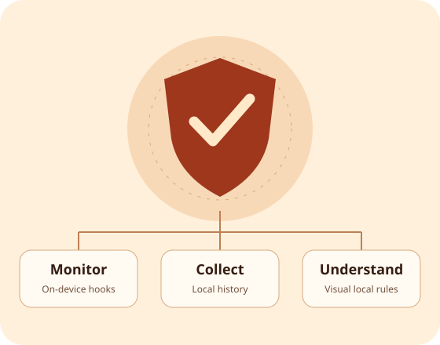

The monitoring engine
Hooks supported APIs in enabled app processes. Eight categories cover network, files, keychain, clipboard, location, camera, microphone, and tracking-related calls.
New project · November 2026 · Jailbreak beta
An iPhone app that turns supported app activity into a readable timeline. Built on the phone it observes, with live charts and built-in local rules.

Why I built it
I wanted to see what happened after opening an app: which supported network, clipboard, location, file, and other sensitive actions it called. The first version was a local dashboard. I then built a native UIKit app so checking activity felt like using an iPhone app.
The app now opens on live visual summaries: action counts, category charts, and built-in rules, with raw data available through Developer Mode. The system has three parts: a monitoring tweak, a collector, and a viewer. It is being distributed as a beta through Sileo and Zebra.
Hooks supported APIs in enabled app processes. Eight categories cover network, files, keychain, clipboard, location, camera, microphone, and tracking-related calls.
A Python collector receives events, batches them into SQLite, and serves the local app. Seven-day retention keeps the timeline focused.
See activity by app, clipboard reads, capture-start calls, location starts, and identifier requests. Built-in rules calculate summaries directly on your phone.
Try the beta
Add the repository in Sileo or Zebra, then install Privacy Monitor. Its dependencies include the engine, collector, and Python runtime.
https://satyamsaxena1.github.io/repo/
For Dopamine rootless. Engine tested on iPhone 13 Pro Max / iOS 15.5; clean-device installation and native UI verification remain beta work. Other configurations are unverified. Only supported actions are visible; this is not a complete audit or a malware detector.
Today shows your activity mix and key counters. Apps breaks activity down by app. History charts seven days. Summaries refresh every five seconds while visible, with the last event time shown. Built-in rules run locally; no AI account or MCP setup is required. Recorded calls are observations, not a safety score.